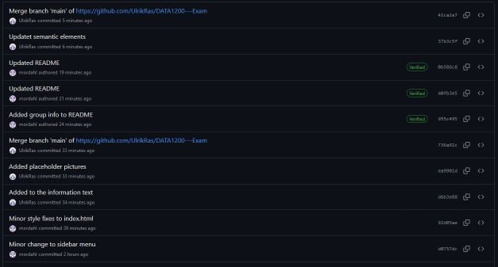
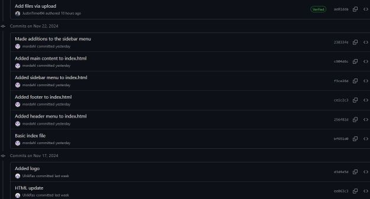
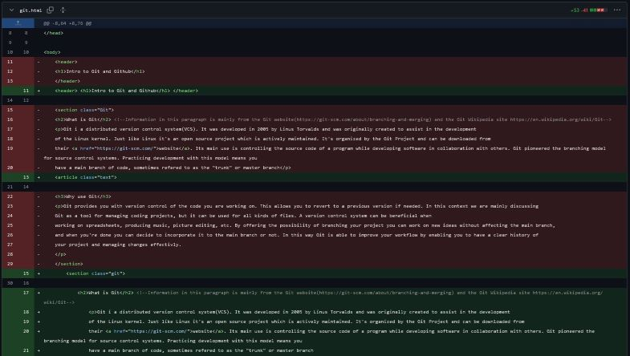
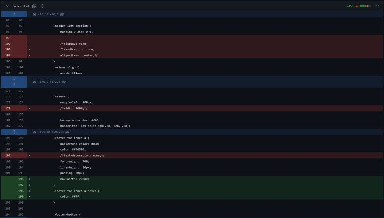

Intro to Git and Github
What is Git
Git i a distributed version control system(VCS). It was developed in 2005 by Linus Torvalds and was originally created to assist in the development of the Linux kernel. Just like Linux it's an open source project which is actively maintained. It's organized by the Git Project and can be downloaded from their website. Its main use is controlling the source code of a program while developing software in collaboration with others. Git pioneered the branching model for source control systems. Practicing development with this model means you have a main branch of code, sometimes refered to as the "trunk" or master branch.
Why use Git
Git provides you with version control of the code you are working on. This allows you to revert to a previous version if needed. In this context we are mainly discussing Git as a tool for managing coding projects, but it can be used for all kinds of files. A version control system can be beneficial when working on spreadsheets, producing music, picture editing, etc. By offering the possibility of branching your project you can work on new ideas without affecting the main branch, and when you're done you can decide to incorporate it to the main branch or not. In this way Git is able to improve your workflow by enabling you to have a clear history of your project and managing changes effectivly.
Advantages of using Git
- Tracks changes to the project
- Provides historical back-up of project-files
- Create branches to try out ideas
- It can handle large projects


What is Github
Github is a cloud-based platform designed for developers to collaborate on code and manage projects. It uses the Git version control system. Github was started in San Fransisco in october 2007 by four developers. The site was launched in april 2008 and gained popularity quite quickly. Within a few years it became tha largest code repository host in the world. In 2018 Github was aquired by Microsoft, but it remains an independent business with Microsoft as it's parent company.
Why use Github
Since Github is cloud-based as opposed to Git it means your repositories will be backed up independently of your local system. This means you can also access them from anywhere with an internet connection. This ads a layer of safety ensuring your projects will be safe if you should lose or break your computer. Extra backup is great, but the real advantage of Github is the community and collaboration. Github enables several developers to collaborate on the same project. They can even work on it at the same time. You can also create your own forks of other public projects and make your own versions, or even propose those versions to the original project. These features makes Github a fantastic resource for learning and collaboration. It provides a platform for discussion and code reviews so developers and other stakeholders can work together and share knowledge. Go to their website to set up an account and join the community!
Advantages of using Gitub
- Enables teambased development
- Allows multiple developers to work simultaneously on the same project
- Allows you to contribute to open source projects and browse other peoples code
- Enables you to share project you are working on with the world
- It's a great resource for learning and networking


Git and Github - Key differences
| Git | Github |
|---|---|
| Git is software | Github is a service |
| The Git Project maintains Git | Microsoft owns and maintains Github |
| It's a command-line tool | It's a graphical user interface |
| Installs locally on your system | Hosted on the web |
| It's a VCS to manage source code history | It's a hosting service for Git repositories |
| It's open-source | Has free-tier and pay-tier options |